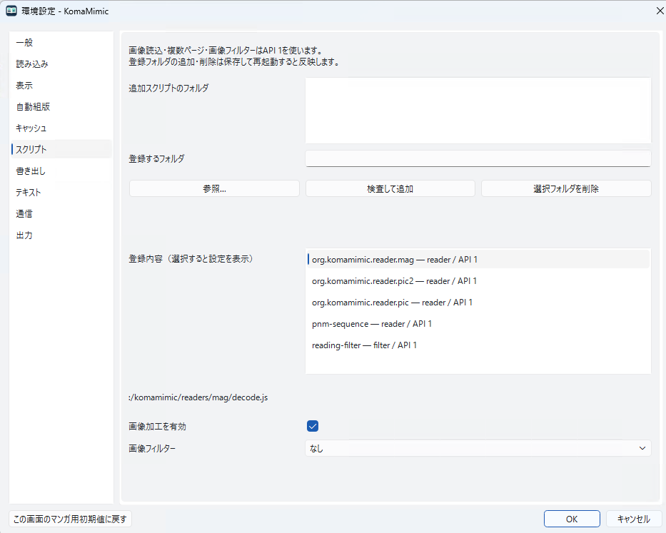

スクリプトの導入と登録
日本語 | English
API 1のJavaScriptで画像reader、複数ページreader、画像filterを追加できます。 汎用の文書reader・書庫reader・writer API、Susie/AviSynthの互換実行は提供しません。
環境設定で登録する
manifest.jsonとJavaScriptを同じpackageフォルダに置きます。- 「環境設定 → スクリプト」でpackage、または直下にpackageを並べたフォルダを指定します。
- 「検査して追加」で内容を検査し、設定値と使うfilterを選びます。
- OKで保存し、フォルダ追加・削除は再起動で反映します。値の変更後は本を開き直します。
登録フォルダの追加・削除をOKで保存すると、再起動を促すダイアログを表示します。 案内を閉じた後、KomaMimicを終了して起動し直してください。自動では再起動しません。 キャンセルした場合や登録フォルダに変更がない場合は、この案内は表示しません。 登録済みスクリプトの設定値だけを変えた場合は、本を開き直して反映します。

登録の検査ではJavaScriptを実行しません。キャンセルでは登録・設定値・実行中の一覧を 変更しません。登録の削除はファイルの削除ではありません。同じIDは後の登録で置換します。 同梱を含め最大32package、保存する登録フォルダは最大32件です。
起動時に登録先を読めない場合は同梱readerで起動し、設定画面に原因を表示します。 フォルダを修正するか登録解除して再起動してください。 画像・書庫に入っているJavaScriptを自動的に探して実行する機能はありません。
開発時の指定
komamimic --script-readers /path/to/package /path/to/sample.toy
複数回指定できます。保存した登録の後に適用する、その起動中だけの上書きで、自動保存しません。 この指定では既存ウィンドウへ転送せず独立して起動します。ソース変更後は再起動が必要です。